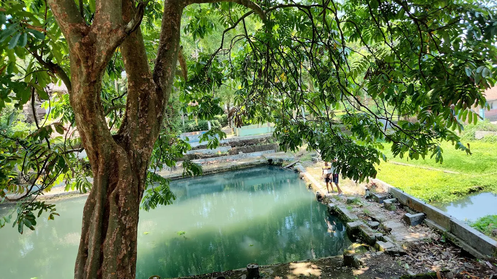
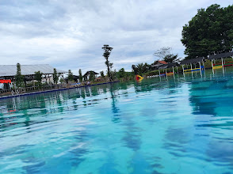

35.000+
Jumlah Penduduk
8 Desa
Wilayah Desa
25+
Sekolah
Wisata Alam
Potensi Wisata
Profil Kecamatan
Kecamatan Cijambe merupakan salah satu kecamatan di Kabupaten Subang yang memiliki keindahan alam pegunungan, udara yang sejuk, dan potensi ekonomi yang berkembang pesat.

.webp)

Sejarah Kecamatan
1950
Kecamatan Cijambe mulai berkembang sebagai daerah pertanian.
1980
Infrastruktur jalan dan pendidikan mulai berkembang.
2026
Menjadi wilayah dengan potensi wisata dan ekonomi yang maju.
Peta Kecamatan

Daftar Desa
Struktur Organisasi Kecamatan
Camat
H. Nana Suyatna, S.Pd., M.Si.
Sekretaris Kecamatan
Sekretaris Kecamatan Cijambe
Seksi Pemerintahan
Bidang pemerintahan dan administrasi desa
Seksi Pelayanan Publik
Pelayanan administrasi masyarakat
Seksi Pemberdayaan
Pembangunan dan ekonomi masyarakat
Seksi Ketentraman
Ketertiban dan keamanan wilayah
Sub Bagian Umum
Administrasi dan kepegawaian
Sub Bagian Keuangan
Pengelolaan anggaran kecamatan
Visi dan Misi
Visi
Menjadikan Kecamatan Cijambe yang maju, mandiri, modern dan sejahtera.
Misi
- Meningkatkan pelayanan publik
- Mengembangkan potensi desa
- Meningkatkan kualitas SDM
- Mendorong ekonomi masyarakat